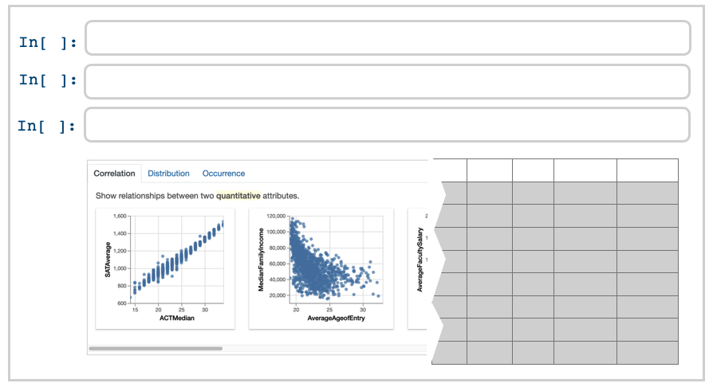
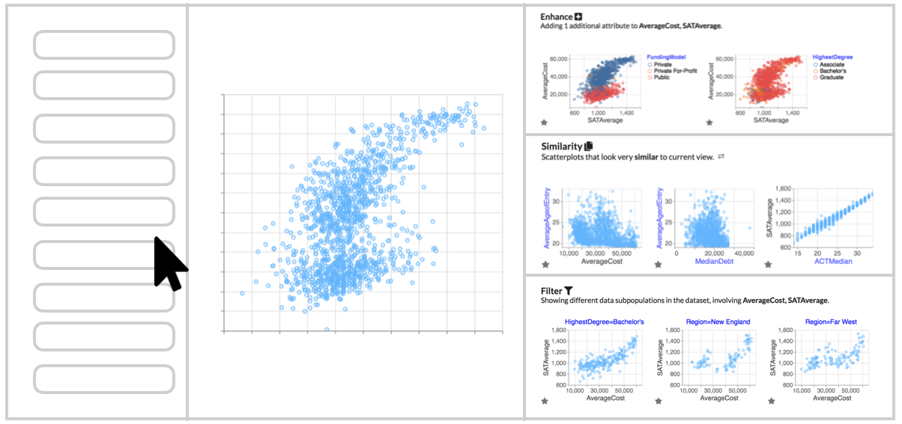
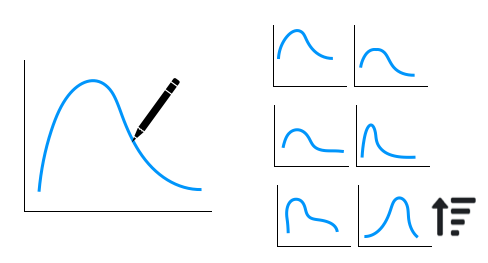
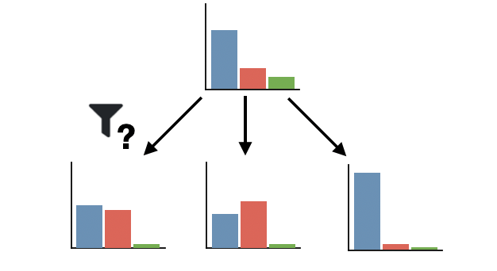
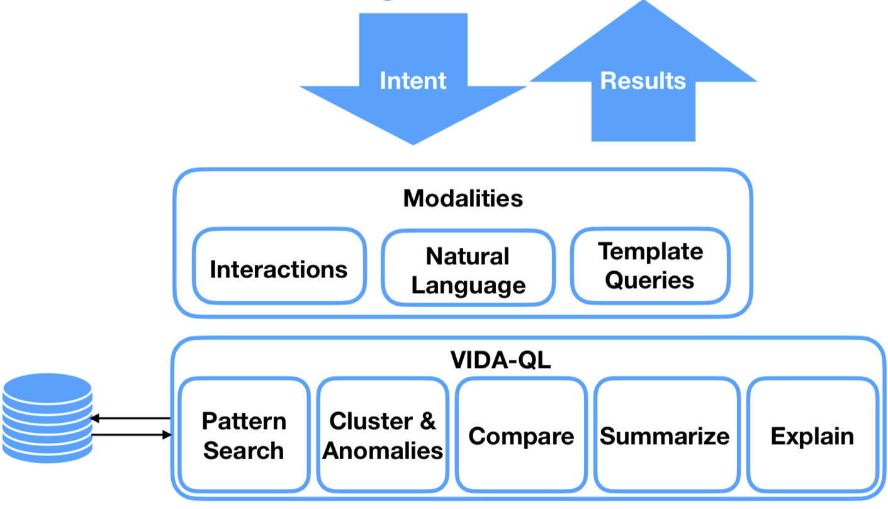

Doris Jung-Lin Lee
I recently finished my PhD at the RISE Lab and I School at UC Berkeley, working with Professor Aditya Parameswaran.
The focus of my dissertation is to make data exploration and visualization easier and more accessible through automation. During my PhD, I developed several data science tools aimed at accelerating insight discovery, including  , a Python library for accelerating and simplifying the process of data exploration. In 2020, I was awarded the Facebook PhD Fellowship in Systems for Machine Learning.
, a Python library for accelerating and simplifying the process of data exploration. In 2020, I was awarded the Facebook PhD Fellowship in Systems for Machine Learning.
Before this, I was at the computer science department at the University of Illinois, Urbana-Champaign. I received my Bachelor's degree in physics and astrophysics from UC Berkeley in 2016.
News Updates
- 10/2021: Our Lux paper is accepted at the Scalable Data Science Track at VLDB 2022!
- 08/2021: Deposited my dissertation on designing automated assistants for visual data exploration!
- 05/2021: Check out this new episode on Software Daily on accelerating data exploration with Lux!
- 05/2021: Two new papers! Our Frontier paper is accepted at TVCG! Also the arxiv preprint for our Lux paper is out!
- 05/2021: Eva and Doris X. presented our AutoML paper at CHI 2021!
- 04/2021: Release of lux-api v0.3 and Lux reaches 2k stars!
- 04/2021: Sharing our thoughts around Lux in the latest episode of the Python Podcast.
- 03/2021: Celebrating Women in Data Month: Invited talk at Women in Coding & Data Science and lightning talk at WiDS@Berkeley!
- 11/2020: Guest lecture at CS 560 Data Visualization course at University of San Francisco.
- 10/2020: First major release for Lux! Presented a poster at JupyterCon, and hands-on tutorial at RISE Camp.
- 07/2020: Spoke about Lux at the Women in Tech event at Zillow, slides here.
- 06/2020: Our new paper on understanding ML development via empirical user workflow traces will be virtually presented at the HILDA workshop in SIGMOD.
- 05/2020: Spoke about automation in data science for the Alter Everything Podcast.
Selected Publications
My research is centered around understanding the challenges that users face during exploratory data analysis and develop intelligent systems that guides users in the data science process. You can learn more about this line of research in this blogpost or this podcast.
For a full list of publication, please refer to my CV for more details.
For a full list of publication, please refer to my CV for more details.
|

|

Deconstructing Categorization in Visualization Recommendation: A Taxonomy and Comparative Study
[PDF]
IEEE Transactions on Visualization and Computer Graphics |

You can't always sketch what you want: Understanding Sensemaking in Visual Query SystemsIEEE Visual Analytics Science & Technology (TVCG Track at VAST'19 at VIS) |

Avoiding Drill-down Fallacies with VisPilot: Assisted Exploration of Data SubsetsACM Intelligent User Interface (IUI) 2019 |

The Case for a Visual Discovery Assistant: A Holistic Solution for Accelerating Visual Data Exploration
[PDF]
IEEE Data Bulletin 2018 |